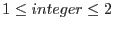
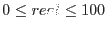

| Parameter | Mand | Type | Default | Constraints |
| table | yes | table specifier | | event list table specifier |
A table specifier which must point to a rgs event list table in a data set.
|
| order | no | integer | 1 |
 |
Reflection order to process.
|
| pdistincl | no | real | 90 |
 |
Size of order regions, specified by the percentage of the
pulse-height distribution covered between each pair of vertices with
the same dispersion coordinate.
|
| binningunits | no | choice | LAMBDA | LAMBDA BETA |
Binning units to calculate the background template
|
| backgroundmodelset | no | string | Model_background.fits | valid file name |
The name of the file to which the modeled background list is to be written.
|
| Parameter | Mand | Type | Default | Constraints |